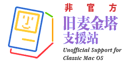

| 主页 | 入门 | 硬件指南 | 软件指南 | Mac帮助 | 关于本站 |
Mac使用的文件系统是HFS（Mac OS 标准格式）/HFS+（Mac OS 扩展格式），早期还有MFS，PC一般不能直接支持。而且Mac的文件系统有data fork和resource fork的数据，而PC的大多数文件系统只有一个fork。这些因素导致了PC和Mac之间交换文件的不便。一般而言，如果丢失resource fork的数据，许多Mac文件将无法正常使用，因此将Mac文件拷贝到PC时需要用MacBinary或BinHex软件对其进行编码，生成.bin或.hqx的文件后拷贝到PC。这两种格式会保留data fork和resource fork的数据，确保文件交换后能正常使用。后来Stuffit格式(.sit)出现，可以将Mac文件压缩成.sit文件从而进行文件交换。
SheepShaver/BasiliskII与主机交换文件方法较为简单。模拟器本身支持将主机的硬盘映射为模拟器中的网络驱动器，在模拟器中可以直接访问主机文件。修改模拟器配置文件中的extdrives行，Windows中可以添加驱动器盘符，其他系统中直接填写模拟器可以访问的主机路径。
其他模拟器，如果是Mini vMac，可以将磁盘镜像扩展名更改为.HFV或.DSK格式，使用HFVExplorer打开进行文件交换。HFVExplorer只支持HFS文件系统（Mac OS 标准格式），不支持HFS+（Mac OS 扩展格式）。
如果磁盘镜像是HFS文件系统（Mac OS 标准格式），在Mac OS X中可以更名为.img扩展名，用自带的磁盘工具打开。Windows中可以使用TransMac、MacDrive等软件打开。注意，虽然Mac OS X也支持HFS文件系统（Mac OS 标准格式），但不建议在Mac OS X下编辑HFS文件系统（Mac OS 标准格式）的镜像，因为容易出错导致镜像损坏。而且从Mac OS X 10.6开始，HFS文件系统（Mac OS 标准格式）已经是只读了，不能写入。macOS 10.15彻底移除对HFS文件系统（Mac
OS 标准格式）的支持。
为了方便交换数据，使用Qemu模拟器时建议使用.img格式的磁盘镜像，而不是QCow系列格式。
如果是软盘，可以在PC机上使用软驱（内置或USB均可）读取，需要配合HFVExplorer软件读写软盘内容。
如果是SCSI硬盘，则PC上需要装有SCSI卡，再使用HFVExplorer、TransMac、MacDrive等软件读写。
如果是IDE硬盘，则可以安装在PC上，或借助易驱线（IDE to USB）、硬盘盒等设备连接，再配合上述软件读写。
有USB的Mac机型，可以直接使用U盘交换文件，Mac OS 8.0/8.1支持FAT32，但支持不是很好，建议使用Mac OS 9系统访问FAT32的U盘。交换文件时，同样建议使用BinHex或Stuffit将Mac文件打包处理。
如果使用老Mac笔记本，有PCMCIA插槽的机型，推荐使用CF卡+PCMCIA CF卡套，对于Oldworld ROM机型来说，甚至可以从PCMCIA的CF卡启动。而且CF卡在PC上也有多种多样的读卡器可以支持，配合上述软件可以轻松交换文件。
现代Mac大多直接支持老Mac磁盘，但同样建议使用 HFS+（Mac OS 扩展格式） 文件系统。

Apple logo、Macintosh、Mac、Mac OS是Apple Inc.的商标。本站是非官方支持站点，与Apple Inc.无任何关系。
感谢@Mation Wang制作Logo